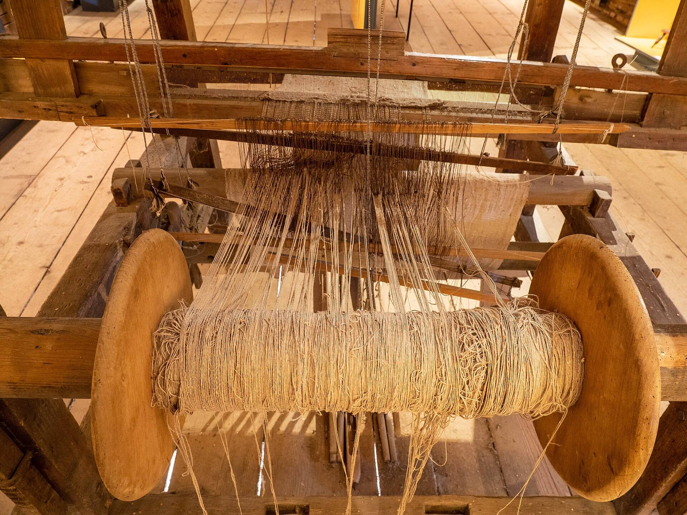
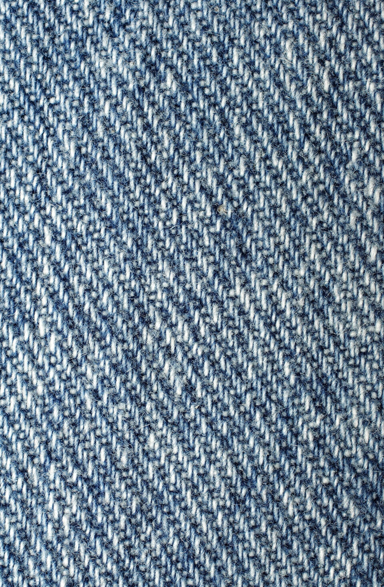
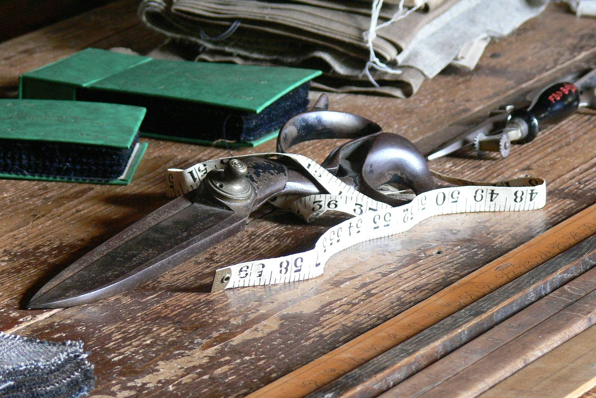

Linen and wool, woven by the metre
Woven to order on two looms in the Scottish Borders.
The cloth, in short
Every length is woven after you order it.
- Fibre
- Linen or wool
- Woven
- To order, cut from the beam
- Sold
- By the metre, in the length you need
- Price
- £64a metre, from
Close enough to count the threads
The weave, as the window light finds it.

Six to eight weeks, beam to door
Counted from the day your order reaches the studio.
Your order
Warped, woven and finished
Your cloth arrives

Cut to the metres you order
Tell us the room and the length. We weave it, cut it from the beam and send it.
Work out the priceStart an order
The cloth, the metres and the room it is for.
- Metres
- 12
- A metre, from
- £64
- From
- £768